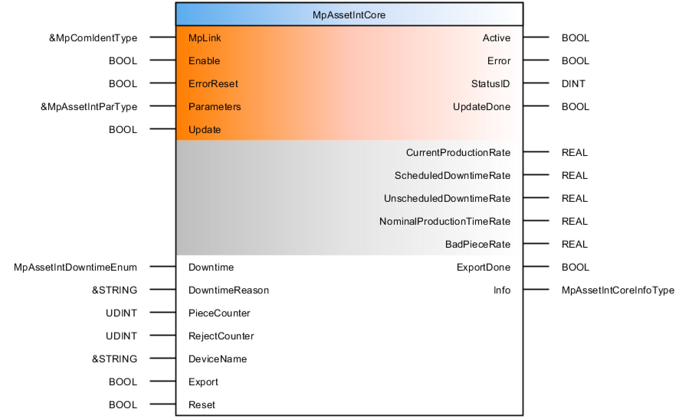
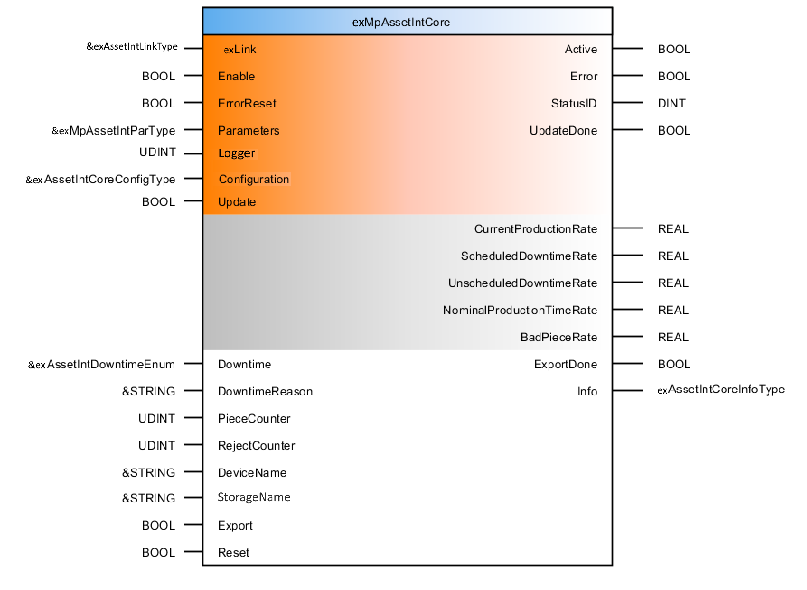
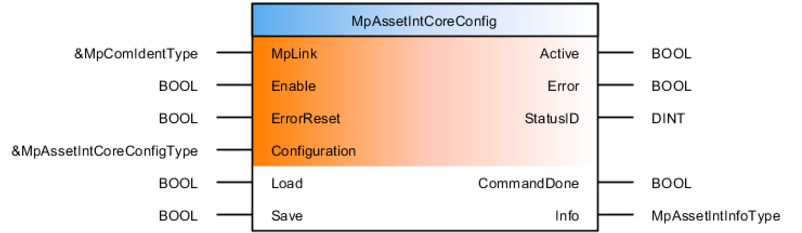
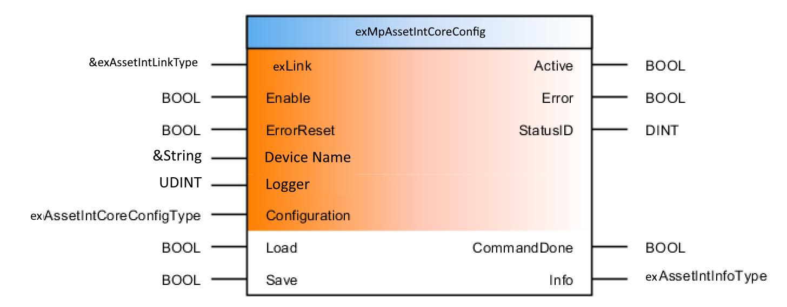

Compatibility
The goal is to provide a community version that almost matches the official version. However this is not possible for some components. There is no AssetInt configuration file in Automation Studio under the configuration view. The configuration is done through code. This is similar to using the official function block MpAssetIntCoreConfig.
For a general description of mappAssetInt see Automation Studio help
- (7f7c4218-cad1-406e-9c36-3e8b54e4c5c2) for a description of the offical mappAssetInt
Function blocks compared to the official version
MpAssetIntCore
For constants used in the function block see constants.
|
Original

|
New

|
| I/O | Parameter | Data type | Description |
|---|---|---|---|
| IN | exLink | Pointer to exAssetIntLinkType | Remanent variable structure that contains short term data for cross function block communication. |
| IN | Enable | BOOL | The function block is active as long as this input is set. |
| IN | ErrorReset | BOOL | Resets function block errors. |
| IN | Parameters | Pointer to exAssetIntParType |
Parameters of the function block. |
| IN (NEW) | Logger | Pointer to STRING[LOG_LEN][0..LOG_NUM] | String array for logger messages. |
| IN (NEW) | Configuration | Pointer to exAssetIntCoreConfigType |
Structure used to specify the configuration. |
| IN | Update | BOOL | Updates the parameters on a rising edge of the input. |
| IN | Downtime | exAssetIntDowntimeEnum |
Indicates downtime. |
| IN | DowntimeReason | Pointer to STRING[50] | Reason for the downtime. |
| IN | PieceCounter | UDINT | Number of products manufactured. |
| IN | RejectCounter | UDINT | Number of rejected products. |
| IN | DeviceName | Pointer to STRING[50] | File device (data storage medium) where data is exported to. |
| IN (NEW) | StorageName | Pointer to STRING[50] | File device (data storage medium) where the files are stored. |
| IN | Export | BOOL | Exports statistical data regarding overall equipment effectiveness. |
| IN | Reset | BOOL | Resets the data in the internal buffer. |
| OUT | Active | BOOL | Function Block active. |
| OUT | Error | BOOL | Error occurred during execution. |
| OUT | StatusID | DINT | Status information. |
| OUT | UpdateDone | BOOL | Parameter update completed. |
| OUT | CurrentProductionRate | REAL | Current production rate. |
| OUT | ScheduledDowntimeRate | REAL | Scheduled downtime rate. |
| OUT | UnscheduledDowntimeRate | REAL | Unscheduled downtime rate. |
| OUT | NominalProductionTimeRate | REAL | Production time rate at machine's nominal speed. |
| OUT | BadPieceRate | REAL | Rate of bad products. |
| OUT | ExportDone | BOOL | Export successfully executed by function block. |
| OUT | Info | exAssetIntCoreInfoType |
Additional function block information. |
MpAssetIntCoreConfig
For constants used in the function block see constants.
|
Original

|
New

|
| I/O | Parameter | Data type | Description |
|---|---|---|---|
| IN | exLink | Pointer to exAssetIntLinkType | Remanent variable structure that contains short term data for cross function block communication. |
| configuration). | |||
| IN | Enable | BOOL | The function block is active as long as this input is set. |
| IN | ErrorReset | BOOL | Resets function block errors. |
| IN (NEW) | Device Name | Pointer to STRING[50] | File device (data storage medium) where the files are stored. |
| IN (NEW) | Logger | Pointer to STRING[LOG_LEN][0..LOG_NUM] | String array for logger messages. |
| IN | Configuration | Pointer to exAssetIntCoreConfigType |
Structure used to specify the configuration. |
| IN | Load | BOOL | Loads the configuration of the component. |
| IN | Save | BOOL | Saves the configuration of the component. |
| IN | Active | BOOL | Function block active. |
| OUT | Error | BOOL | Error occurred during execution. |
| OUT | StatusID | DINT | Status information. |
| OUT | CommandDone | BOOL | Execution successful. Function block is finished. |
| OUT | Info | Pointer to exAssetIntInfoType |
Additional function block information. |